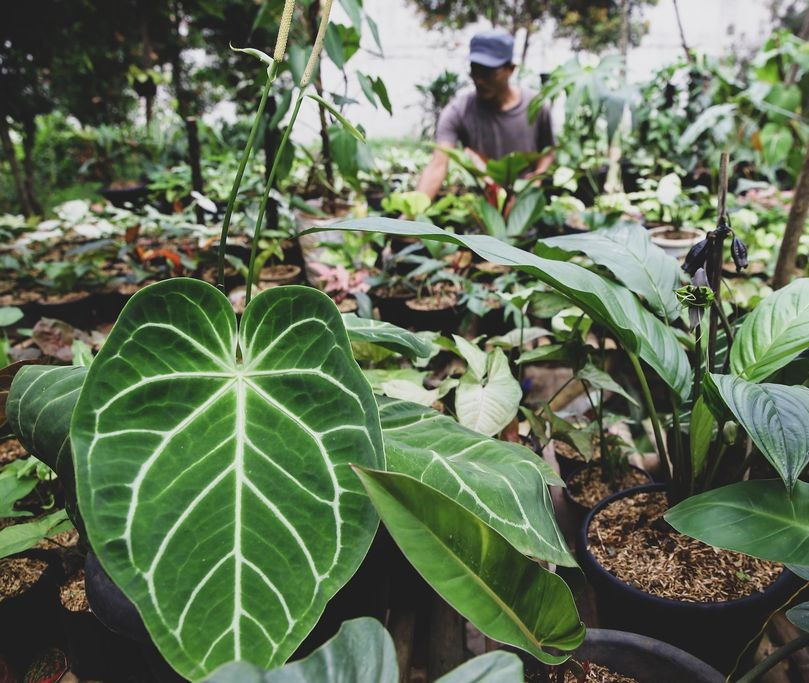
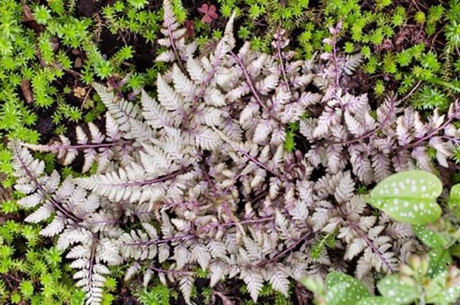
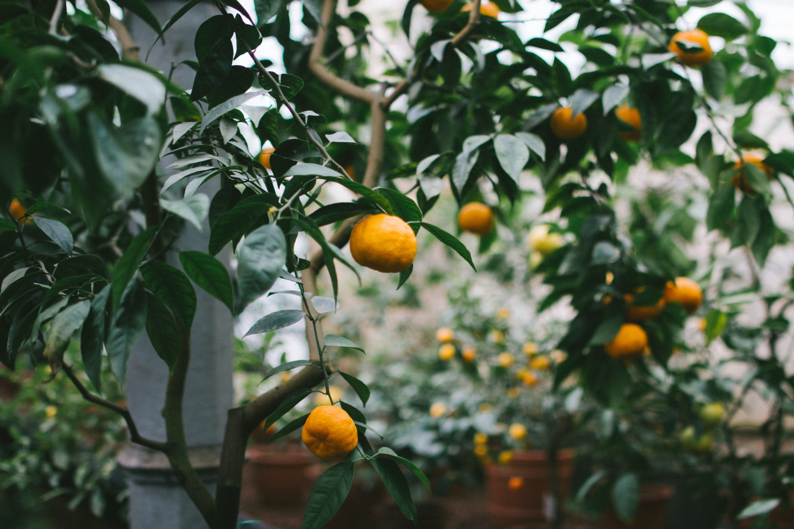
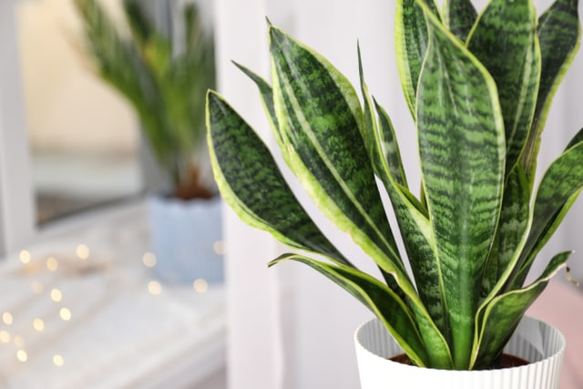

Tanaman Hias Outoor yang Mudah Dirawat

Tanaman hias masih menjadi tren yang diikuti banyak orang. Selain membuat tampilan rumah menjadi lebih indah, tanaman hias juga bisa menjadi hobi yang menyenangkan. Tak hanya dalam rumah, jenis tanaman hias outdoor yang mudah dirawat juga bisa Anda miliki. Tanaman hias outdoor tentu akan membuat halaman rumah semakin tampak cantik dan asri ya, Bunda. Apalagi kalau tanaman hias outdoor-nya mudah dirawat. Meski ditanam di luar rumah, aneka tanaman hias outdoor banyak juga yang mudah beradaptasi pada iklim tropis. Nah, berikut 5 tanaman hias outdoor yang mudah dirawat, dirangkum dari berbagai sumber.
5 Jenis Tanaman Hias Outdoor yang Mudah Perawatannya
1. Kuping Gajah
Tanaman hias kuping gajah yang berbentuk seperti hati berukuran besar dapat mempercantik pekarangan rumah Bunda, lho. Karena ukurannya cukup besar, kuping gajah juga bisa melindungi tanaman kecil lain dari hembusan angin. Kuping gajah menyukai lingkungan basah dan lembap, sehingga harus disiram secara teratur terutama ketika musim kemarau. Seperti kana, kuping gajah juga akan tumbuh subur di wilayah tropis.
2. Pakis jepang
Tanaman hias dengan nama ilmiah Athyrium niponicum ini memiliki daun berbentuk renda dan tumbuh merayap di tanah yang lapang. Daunnya yang unik nampak seperti dicat dengan warna ungu keperakan. Pakis Jepang tergolong tanaman hias yang mudah dirawat karena biasa diletakkan di tempat yang teduh namun tetap terkena sinar matahari. Jangan biarkan tanah terlalu kering ya, Bunda. Ini akan membuat tanaman hias pakis Jepang berubah warna menjadi coklat.
3. Pohon Jeruk
Pohon Jeruk adalah salah satu tanaman yang mudah tumbuh, bahkan di ruangan teduh sekalipun. Selain dapat menjadi dekorasi ruangan yang akan memberikan nuansa menyegarkan, aroma dari pohon jeruk ini rupanya tak disukai serangga. Ya Moms, itu artinya, tanaman ini bisa jadi salah satu cara untuk mengusir serangga di rumah.
4. Lidah mertua (Sansevieria atau Snake Plant)
Salah satu jenis tanaman yang memiliki nama unik ini juga disukai banyak orang. Lidah mertua sendiri dapat tumbuh di dengan baik di segala kondisi. Namun, Anda tetap disarankan untuk dapat menyiraminya sesekali dalam seminggu. Tak hanya sebagai penghias ruangan semata, lidah mertua juga berfungsi menyaring udara. Tanaman ini akan mengeluarkan oksigen di malam hari dan meningkatkan kualitas udara di rumah.
5. Peace lily

Siapa bilang tanaman yang memiliki bunga tak dapat bertahan hidup di dalam ruangan alias indoor? Ya, Peace lily adalah salah satu jenis tanaman yang dapat bertahan di dalam ruangan dengan pencahayaan sedang hingga rendah. Itu artinya, hindari meletakkan peace lily di bawah sinar matahari langsung, ya, Moms. Selain itu, peace lily juga dapat membantu menyaring udara di dalam ruangan, lho, Moms. Namun, jangan lupa untuk tetap merawatnya dengan cara menyiram dan beri sedikit demi sedikit percikan air di daunnya agar tetap lembap.